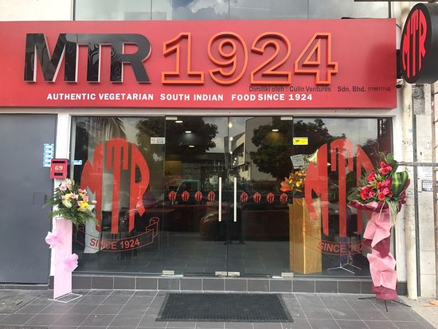
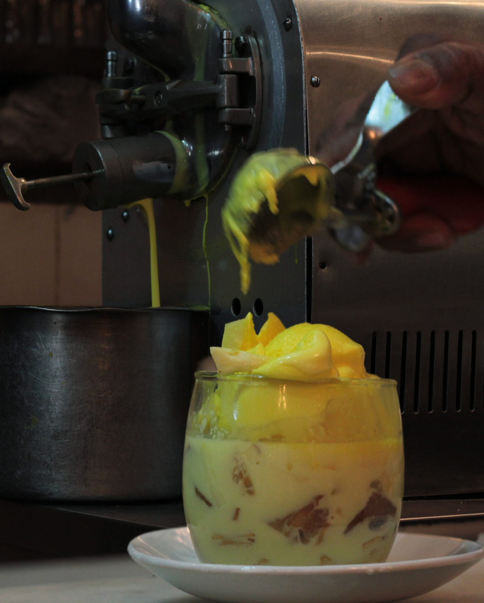
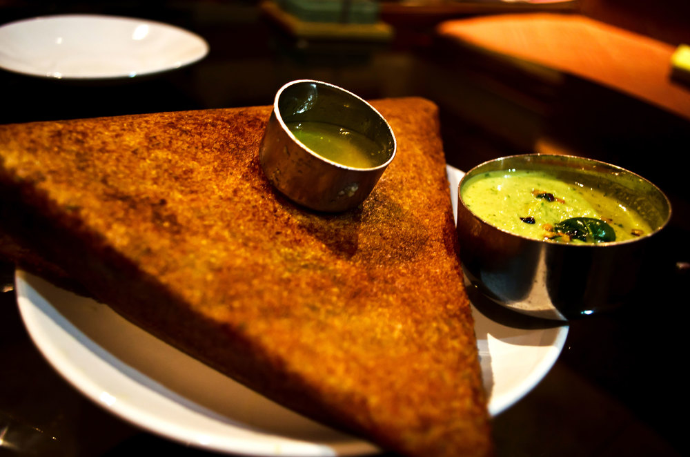
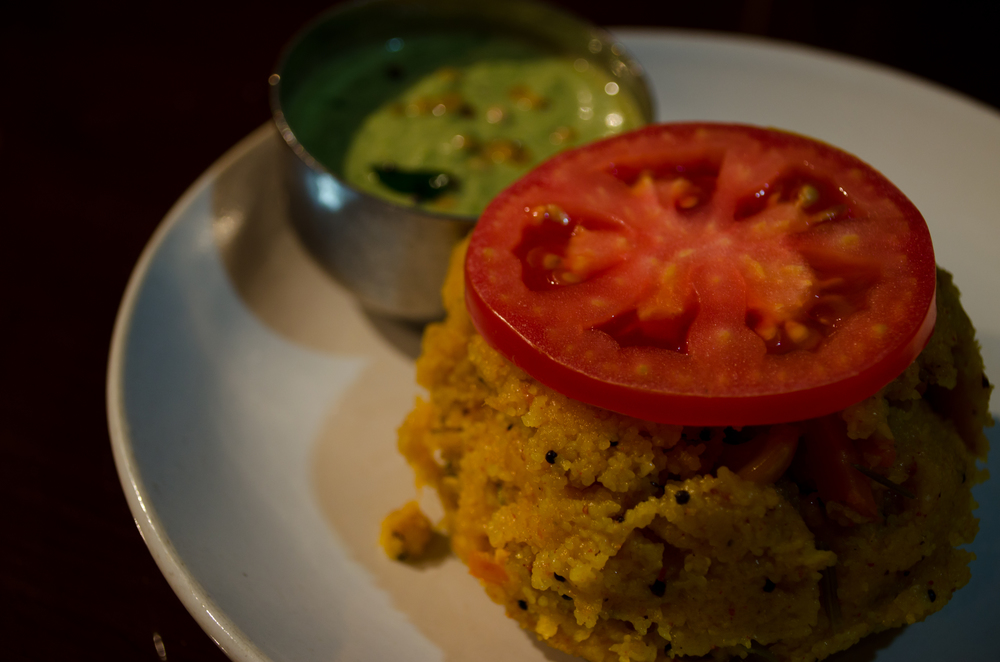
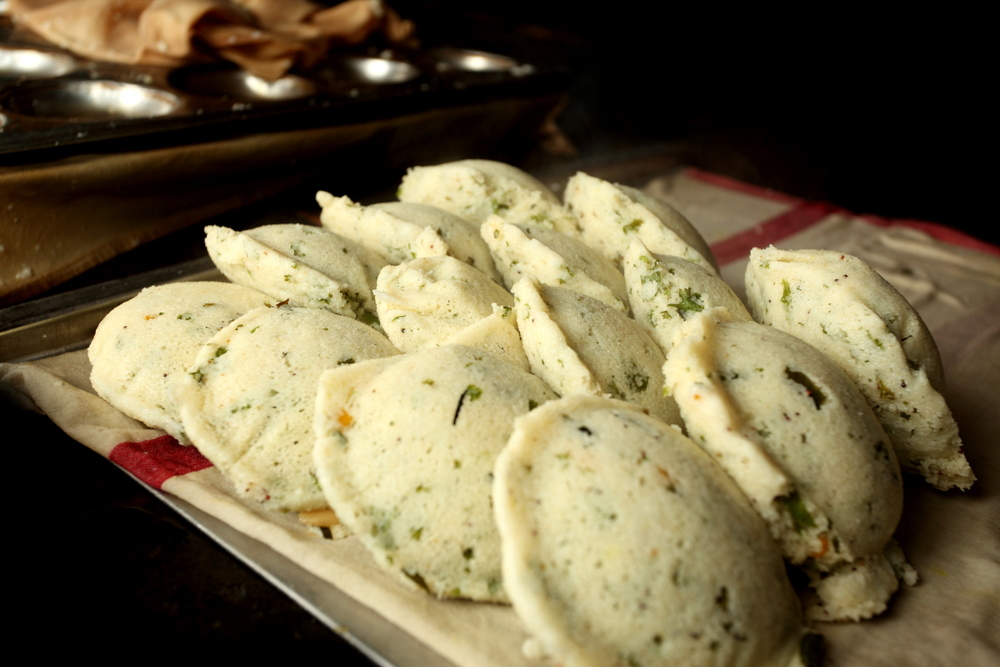
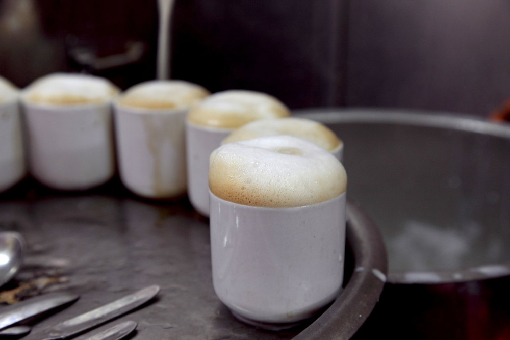

Enter the world of authenticated food

Since 1924
“A legendary name in South Indian comfort food, this super-popular eatery has had Bengaluru eating out of its hands since 1924.”
“Integrity is the backbone of MTR. It’s the core reason for its survival over the decades. Whether it’s food or conduct in business, emphasis is on ethics and fair play.”
The most iconic restaurant in the southern Indian city of Bangalore is the 92-year-old MTR, or the Mavalli Tiffin Room. It's also the place that many say serves the "world's best dosa", writes the BBC's Geeta Pandey.
•⁃⁃⁃⁃ SPECIALITIES ⁃⁃⁃⁃•
-
Fruit Mixture
A delectable mixture of fresh fruits, laced with the delicate flavour of almonds and complimented with a scoop of our trademark American ice cream. -
Masala Dosa
Pancake made from rice batter and black lentils, stuffed with spiced potatoes and laced with ghee. Crispy on the outside, yet spongy on the inside! -
Kharabath
A heady aroma of spices cooked in a blend of roasted semolina, topped with a slice of tomato. The classic kharabhath, now with extra zing!
-
Rava Idli
Steamed semolina cakes made with a mix of yoghurt, coriander, cashew nuts, curry leaves and mustard seeds. Invented by MTR during World War II, when rice was in short supply, the Rava Idli remains our most popular dish to date. -
Coffee
Made from coffee beans which are roasted and ground every single day to ensure the flavour is not lost. No chicory added. This is coffee in its purest form and we can guarantee that you will keep coming back for more!
•⁃⁃⁃⁃ Restaurant Feedback ⁃⁃⁃⁃•